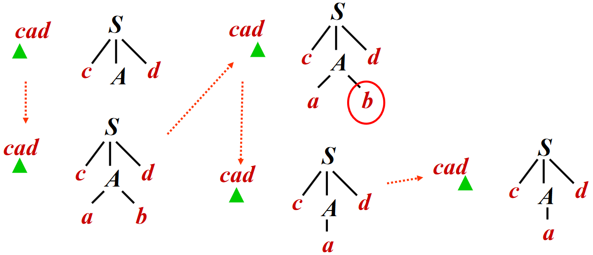
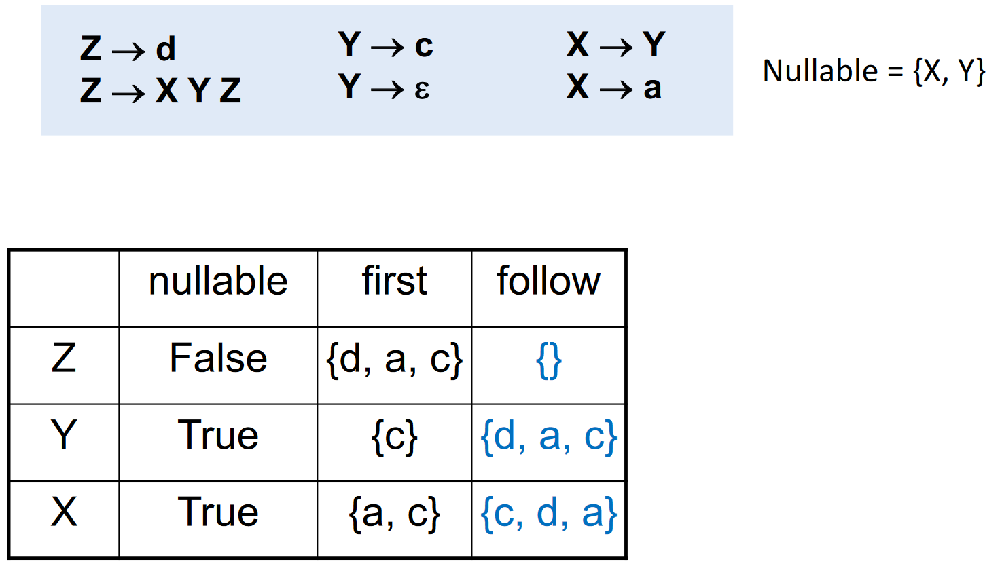
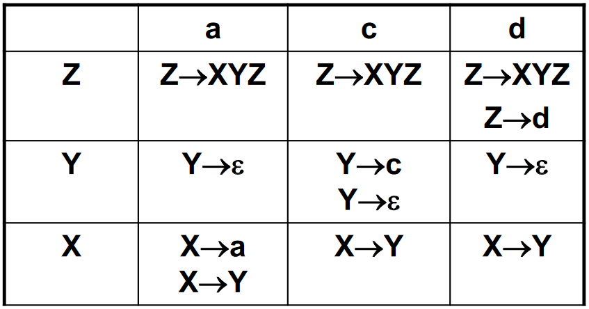
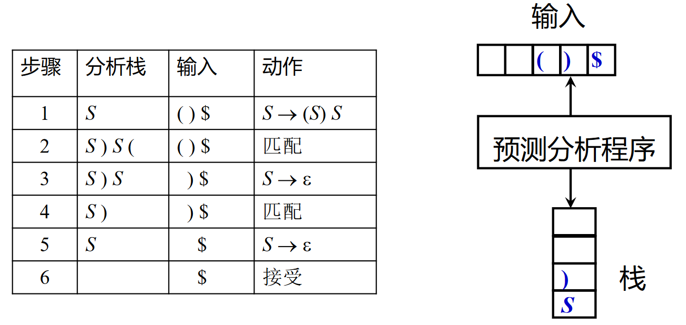
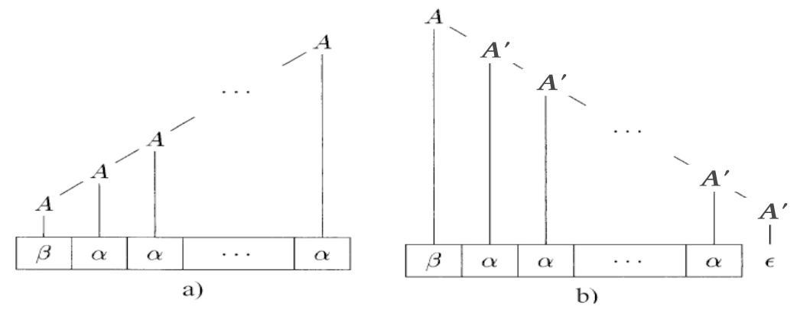

自顶向下分析¶
约 2762 个字 72 行代码 预计阅读时间 10 分钟
自顶向下分析需要从分析树的顶部向底部方向构造分析树，即从文法开始符号 \(S\) 推导出串 \(w\)。在每一步推到中，都需要做两个选择：
- 替换当前句型中的哪个非终结符？
- 自顶向下分析总是选择每个句型的最左非终结符进行替换
- 用该非终结符的哪个产生式进行替换？
接下来将会为第二个问题提供解决方案
允许回溯的递归下降分析¶
递归下降分析 (Recursive-Descent Parsing) 是自顶向下分析的通用形式
- 由一组过程/函数组成，每个过程对应一个非终结符
- 从开始符号 \(S\) 对应的过程开始，（递归）调用其它过程
- 如果 \(S\) 对应的过程恰好扫描了整个输入串，则成功完成分析
对于非终结符 \(A\) 的文法规则 \(A \rightarrow X_1 \ldots X_k\)，对应的过程为：
- 如果 \(X_i\) 是非终结符，则调用相应非终结符对应的过程
- 如果 \(X_i\) 是终结符 \(a\)，则检查输入串是否匹配该终结符，匹配输入串中对应的终结符 \(a\)
- 在这个过程中，如果选择了不合适的产生式，可能需要回溯（如更换产生式）
递归下降分析的例子
考虑文法
为输入串 \(w = cad\) 使用递归下降分析建立分析树（假设按顺序选产生式），过程如下：

但是在通用递归下降中，存在一个很大的问题：回溯
- 复杂的回溯导致代价太高
- 非终结符有可能有多个产生式，由于信息缺失，无法准确预测选择哪一个
- 考虑到往往需要对多个非终结符进行推导展开，因此尝试的路径可能呈指数级爆炸（如 \(a \rightarrow ab | a\)，不确定选择哪条产生式）
- 计算过程类似于 NFA
所以需要构造一个类似于 DFA 的分析方式
LL(1) 和预测分析法¶
LL(1) 文法的定义¶
预测分析法 (Predictive Parsing) 可以接受 LL(k) 文法，其中：
- 第一个 L 表示 left-to-right，即从左到右扫描输入串
- 第二个 L 表示 leftmost derivation，即最左推导
- k 表示向前看 Token 的个数，即向前看 \(k\) 个 Token 来确定产生式（通常 \(k = 1\)）
为了给文法加以限制来确保没有回溯，我们先来定义 First 集和 Follow 集。给定文法 \(G = (T, N, P, S)\)：
- \(\text{First}(\alpha) = \{a | \alpha \Rightarrow^* a \ldots, a \in T\}, \alpha \in (T \cup N)^*\)
- 即可从 \(\alpha\) 推导得到的串的首个终结符的集合
- \(\text{Follow}(A) = \{a | S \Rightarrow^* \ldots Aa \ldots, a \in T\}, A \in N\)
- 即从 \(S\) 出发, 可能在推导过程中跟在 \(A\) 右边的终结符号集
- 例如 \(S \rightarrow \alpha A a \beta\)，则终结符号 \(a \in \text{Follow}(A)\)
由此我们可以给出 LL(1) 文法的定义：文法G的任何两个产生式 \(A \rightarrow \alpha | \beta\) 都满足下列条件
- \(\text{First}(\alpha) \cap \text{First}(\beta) = \emptyset\)，即 \(\alpha\) 和 \(\beta\) 推导不出以同一个单词为首的串
- 若 \(\beta \Rightarrow^* \epsilon\)，则 \(\alpha \nRightarrow^* \epsilon\)，且 \(\text{First}(\alpha) \cap \text{Follow}(A) = \emptyset\)
这样，可以保证产生式选择的唯一性
为什么这么定义 LL(1) 文法？
对于第一个条件而言，存在的意义为：假设下一个输入是 \(b\)，且 \(\text{First}(\alpha)\) 和 \(\text{First}(\beta)\) 不相交，那么
- 若 \(b \in \text{First}(\alpha)\)，则选择 \(\alpha\)
- 若 \(b \in \text{First}(\beta)\)，则选择 \(\beta\)
对于第二个条件而言，存在的意义为：假设下一个输入是 \(b\) 且 \(\beta \Rightarrow^* \epsilon\)，那么
- 若 \(b \in \text{First}(\alpha)\)，则选择 \(\alpha\)（属于第一个条件中的情况）
- 若 \(b \in \text{Follow}(A)\)，则选择 \(\beta\)，因为这样可以使得 \(A \Rightarrow^* \epsilon\) 且后面跟着 \(b\)
实现 LL(1) 预测分析¶
计算 First 和 Follow 集¶
由于在 First 和 Follow 集中涉及空串，因此我们引入 Nullable 的概念：\(X\) 是 Nullable 的，即 \(X\) 能推导出空串
我们接着给出 Nullable，First 和 Follow 集的归纳定义：
Nullable 的归纳定义：\(X\) 是 Nullable 的，当且仅当
- Base case: \(X \rightarrow \epsilon\)
- Inductive case: 若 \(X \rightarrow Y_1 Y_2 \ldots Y_k\)，且 \(Y_1, Y_2, \ldots, Y_k \in N\) 都是 Nullable 的
First 的归纳定义：\(\text{First}(\alpha) = \{a | \alpha \Rightarrow^* a \ldots, a \in T\}\)
- Base case: \(\text{First}(X) = \{X\}\)，如果 \(X \in T\)
- Inductive case: 若 \(X \rightarrow Y_1 Y_2 \ldots Y_k\)，则
- \(\text{First}(X) \ \cup= \text{First}(Y_1)\)
- 如果 \(Y_1 \in \text{Nullable}\)，则 \(\text{First}(X) \ \cup= \text{First}(Y_2)\)
- 如果 \(Y_1, Y_2 \in \text{Nullable}\)，则 \(\text{First}(X) \ \cup= \text{First}(Y_3)\)
- ...
补充说明：虽然上述规则看起来是关于单个非终结符或终结符的，但是实际中 First 是关于文法符号串 \(\alpha\)（类似于产生式右部）的，计算规则类似于 Inductive case
Follow 的归纳定义：\(\text{Follow}(A) = \{a | S \Rightarrow^* \ldots Aa \ldots, a \in T\}\)
- Base case: \(\text{Follow}(S) = \{\$\}\)
- Inductive case: 若存在产生式 \(B \rightarrow s_1 A s_2, s_1, s_2 \in (T \cup N)^*\)，则
- \(\text{Follow}(A) \ \cup= \text{First}(s_2)\)
- 如果 \(s_2 \in \text{Nullable}\)，则 \(\text{Follow}(A) \ \cup= \text{Follow}(B)\)
补充说明：关于 Inductive case 的第 2 种情况, 假设 \(S \Rightarrow^* \ldots B b \ldots\)，即 \(b \in \text{Follow}(B)\)
- 用 \(s_1 A s_2\) 替换 \(B\)，得到 \(S \Rightarrow^* \ldots s_1 A s_2 b \ldots\)
- 由于 \(s_2 \in \text{Nullable}\)，因此 \(b \in \text{Follow}(A)\)
计算 Nullable，First 和 Follow 集

优化 Nullable, First, Follow 的计算 - Tiger book algorithm 3.13
\begin{algorithm}
\caption{Calculate Nullable, First, Follow}
\begin{algorithmic}
\Function{CalculateNullableFirstFollow}{}
\State Initialize \(\text{First}\) and \(\text{Follow}\) to all empty sets, and \(\text{Nullable}\) to all false
\For{each terminal symbol \(Z\)}
\State \(\text{First}[Z] \gets \{Z\}\)
\EndFor
\Repeat
\For{each production \(X \rightarrow Y_1 Y_2 \ldots Y_k\)}
\For{each \(i\) from \(1\) to \(k\), each \(j\) from \(i+1\) to \(k\)}
\If{all the \(Y_i\) are nullable}
\State \(\text{Nullable}[X] \gets \text{true}\)
\EndIf
\If{\(Y_1, \ldots, Y_{i-1}\) are all nullable}
\State \(\text{First}[X] \gets \text{First}[X] \cup \text{First}[Y_i]\)
\EndIf
\If{\(Y_{i+1}, \ldots, Y_k\) are all nullable}
\State \(\text{Follow}[Y_i] \gets \text{Follow}[Y_i] \cup \text{Follow}[X]\)
\EndIf
\If{\(Y_{i+1}, \ldots, Y_{j-1}\) are all nullable}
\State \(\text{Follow}[Y_i] \gets \text{Follow}[Y_i] \cup \text{First}[Y_j]\)
\EndIf
\EndFor
\EndFor
\Until{\(\text{First}\), \(\text{Follow}\), and \(\text{Nullable}\) no longer change}
\EndFunction
\end{algorithmic}
\end{algorithm}
构造预测分析表¶
预测分析表是表驱动分析程序需要的二维表（记为 \(M\)），其中
- 表的每一行 \(A\) 对应一个非终结符
- 表的每一列 \(a\) 对应某个终结符或输入结束符 \(\$\)
- 表中的项 \(M(A,a)\) 表示: 针对非终结符为 \(A\)，当下一个输入 Token 为 \(a\) 时，可选的产生式集合（若为空，表示语法错误 syntax errors）
构造方法为：对文法 \(G\) 的每个产生式 \(X \rightarrow \gamma\)
- 对每个 \(t \in \text{First}(\gamma)\)，则将 \(X \rightarrow \gamma\) 加入 \(M[X, t]\)
- 另如果 \(\gamma \in \text{Nullable}\)，且 \(t \in \text{Follow}(X)\)，则将 \(X \rightarrow \gamma\) 加入 \(M[X, t]\)
构造预测分析表
以 计算 Nullable，First 和 Follow 集 为例，构造预测分析表如下：

可以看到在表中 [\(Z\), \(d\)]、[\(Y\), \(c\)]、[\(X\), \(a\)] 等项处有多个产生式，表明存在二义性，该文法不是 LL(1) 文法
由预测分析表可以给出 LL(1) 文法的另一个定义：如果文法 \(G\) 的预测分析表中每个项都至多有一个产生式，则文法 \(G\) 是 LL(1) 文法
预测分析¶
对于 LL(1) 分析，有两种实现方式：
- 递归下降实现
- 递归下降语法分析程序由一组过程组成
- 每个非终结符号对应于一个过程
- 可以通过向前看一个输入符号来唯一地选择产生式
- *非递归实现
- 可以看作是实现 LL(1) 对应的的 PDA (pushdown automata)
- 针对输入串 \(w\)，有两个基本动作
- 如果栈顶是非终结符 \(A\)，则利用预测分析表, 选择产生式 \(A \rightarrow \alpha\)，将栈顶的非终结符 \(A\) 替换成串 \(\alpha\)
- 如果栈顶是终结符 \(\alpha\)，则将栈顶记号 \(\alpha\) 和输入中的 Token 匹配
对于递归下降实现中，一个过程可以表示为：
void A() {
// 根据 Lookahead Token 与预测分析表选择产生式
// 记该产生式为 A -> X1 X2 ... Xn
// ...
for (int i = 0; i < k; i++) {
if (isNonterminal(Xi)) {
// 调用对应的过程
Xi();
} else if (Xi == inputToken) {
// 匹配输入 Token
eat(inputToken);
} else {
// 语法错误
error();
}
}
}
LL(1) 的递归下降实现
考虑文法
Step 1: Represent the token
Step 2: build infrastructure for reading tokens from lexer
// call lexer
extern enum token getToken(void);
// store the next token
enum token tok;
void advance() {
tok=getToken();
}
// consume the next token and get the new one
void eat(enum token t) {
if (tok==t) {
advance();
} else {
error();
}
}
Step 3: build a function for each non-terminal
void S(void) {
switch(tok) {
case IF: eat(IF); E(); eat(THEN); S(); eat(ELSE); S(); break;
case BEGIN: eat(BEGIN); S(); L(); break;
case PRINT: eat(PRINT); E(); break;
default: error();
}
}
void L(void) {
switch(tok) {
case END: eat(END); break;
case SEMI: eat(SEMI); S(); L(); break;
default: error();
}
}
void E(void) {
eat(NUM); eat(EQ); eat(NUM);
}
当然，这个语法比较特殊：对于每一个非终结符的所有的产生式，右边第一个符号都是不同的终结符，所以可以很轻松的写出 switch 语句。如果没有这种“便利”的条件，需要先写出预测分析表，再“硬编码”到switch语句
*LL(1) 的非递归实现

消除左递归与左公因子¶
LL(1)文法有一些明显的性质
- LL(1)文法是无二义的
- LL(1)文法是无左递归的
- LL(1)文法是无左公因子的
无左递归¶
左递归 (left-recursive) 文法
- 如果一个文法中有非终结符号 \(A\) 使得 \(A \Rightarrow^+ A \alpha\)，那么这个文法就是左递归的
- 特别的，称 \(S \rightarrow S a | b\) 为直接/立即左递归
左递归带来的问题是：在递归下降分析中，可能会导致无限循环
- 如考虑串 \(baaaaa\)
- 在最左推导下，若只看下个 Token，可能产生 \(S \Rightarrow S a \Rightarrow S a a \Rightarrow S a a a \Rightarrow \ldots\)
为了解决这个问题，可以考虑限制文法或者进行文法变换以消除左递归。其中，消除左递归的文法变换的一个例子如下：
- 原先：\(A \rightarrow A \alpha | \beta\)，其中 \(\alpha \neq \epsilon\)，\(\alpha\) 和 \(\beta\) 都不以 \(A\) 开头，如图中 a)
- 修改为：\(A \rightarrow \beta A'\)，\(A' \rightarrow \alpha A' | \epsilon\)，如图中 b)

无左公因子¶
有左公因子的 (left-factored) 文法如：\(P \rightarrow \alpha \beta | \alpha \gamma\)，与之而来的问题是同一非终结符的多个候选式存在共同前缀，可能导致回溯。同样可以考虑限制文法或进行文法变换，其中消除该产生式的左公因子的文法变换为：
其中 \(Q\) 为新添加的未出现过的非终结符
这种方法类似于通过改写产生式来推迟决定，等读入了足够多的输入、获得足够信息后再做选择
错误恢复¶
上文提及，预测分析表中一个空白的项表示语法错误，对于这种情况，有两种解决方式：
- 抛出异常并停止分析
- 打印错误信息，并从当前错误中恢复，继续分析
- 常用的方法有 deleting, replacing, inserting
错误恢复的例子
- Through inserting: pretend we have the token and return normally
- Deleting tokens is safer, because the loop must eventually terminate when EOF is reached. Simple recover by deletion works by skipping tokens util a token in the FOLLOW set is reached
创建日期: 2024年4月23日 16:17:02